Kaito TomabechiM.S. student in Physics · Nakatsuji–Sakai Laboratory · The University of Tokyo
AI-agent-driven physics experiments
Magneto-optical imaging, circuit testing and electrical measurement — run by LLM agents that fix failures mid-run.
- Google–UTokyo Quantum Fellow1 of 4 at UTokyo
- Max Planck Institute, Germanyintern
- IPA MITOU IT 2026sole creator ↗
- JST-Mirai site visitonly student presenter
1 / How it works · 3D concept
That was the concept. Next, the real system:
Watch real operation →The whole system in 97 seconds.
3D concept · Tap “Sound on” for musicIllustration: AI agents coordinate exact measurement routines, repair the software when a step fails, and run other instrument systems the same way.
2 / Real operation · recorded
That was the real system.
See the results ↓The real microscope at work.
Recorded · with musicOn the real instrument, the software finds each device, centres and focuses it, and takes the MOKE images on its own.
3 / Design output · AutoCAD
From analysis to a drawing.
AutoCAD · with musicAnalysis results become a finished layout automatically: devices and electrodes for 60 cells (demonstration layout).
SystemWhat is it, inside?
Algorithms measure. Agents respond.
Abstract
- Agents act through an exact pipeline — flexible, yet precise.
- It fixes its own code mid-run — 4 documented examples.
- Built for any LabVIEW or Python instrument — 9 instruments so far.
- Results carry into design — analysis drives the layout.
I built an AI-native control system for physics experiments: LLM agents decide what to do, and exact algorithmic pipelines carry it out. On a real MOKE microscope it measures unattended, fixes its own code mid-run and turns results into device layouts, cutting 40 hours of hands-on work to 2 minutes of input. It has acquired 315,000+ images over 1,000+ hours of automated runs, is now a core part of the group’s research infrastructure, and already runs 9 instruments. Its exhaustive screening has produced several qualitatively new findings.
Interface
Researchergoal in your own words
AI agentsflexible
Development Agentwrites and repairs code
Experiment Agentplans and runs measurements
Analysis Agentanalyses and reports
Acts onexact
Control PCmeasurement code
Measurement pipelinevia LabVIEW or Python
Reportread by the researcher
Instrument
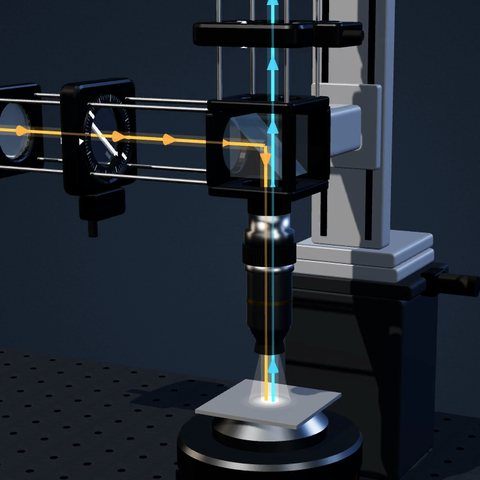
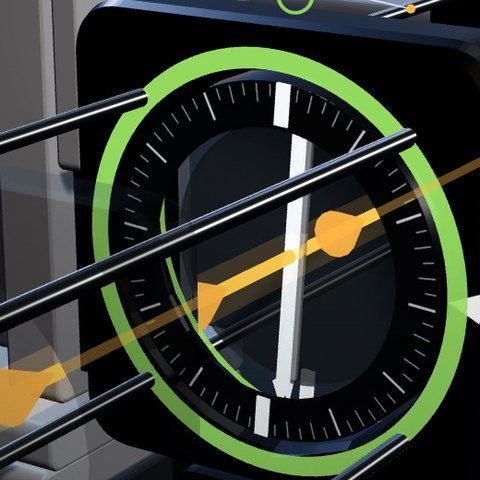
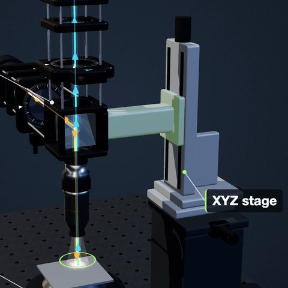
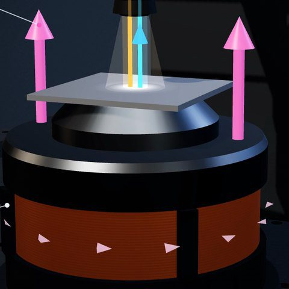
Instrument images are 3D renders from the concept video.
I built everything except the original microscope.
The motorized stage and polarizers, the LabVIEW link, all software and agents, and every measurement and analysis here.
The hardest design decision
The architecture itself: exact algorithms own every measurement step; resident LLM agents watch, diagnose, repair and decide what comes next. Agents act only through the pipeline, which enforces stage and current limits and a stop interface.
InstrumentsDoes it work beyond this microscope?
Built for any LabVIEW or Python instrument.
Beyond optics, the same agents have run circuit design and testing and high-frequency electrical measurement.
Optical measurement
- Camera
- Motorized polarizers
- XYZ stage
- Magnet
Circuits & electrical
- DC power supply
- Pulse generator
- Multimeter
- Oscilloscope
- FPGA
Instruments the agents have operated in real runs, as of October 2026.
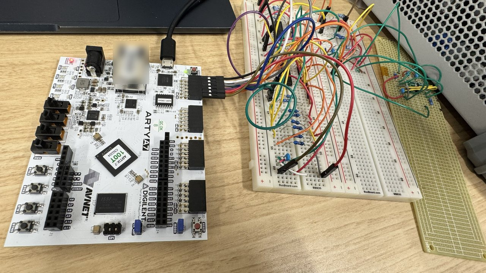
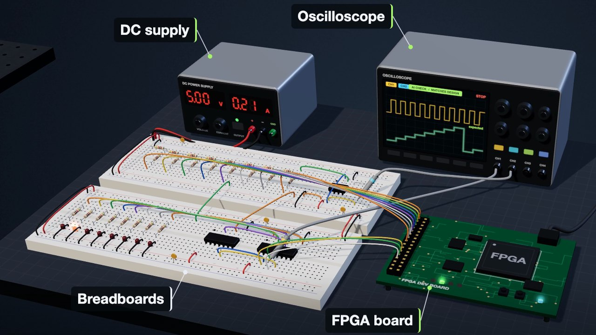
ResultsIs it used for real?
Forty hours of lab work became two minutes of input.
One thin-film measurement series, after the sample is placed: two minutes of input, then three hours unattended.
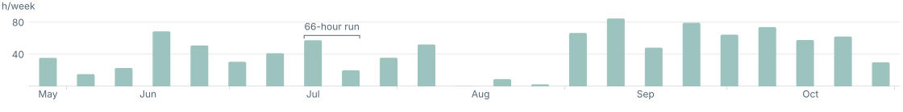
Now a core part of the group’s research infrastructure, used daily by five members. The work earned the Google–UTokyo Quantum Fellowship, MITOU, a JST-Mirai demo, a MERIT award and a technical-assistant post; a paper on its findings is in preparation.
40 h is measured manual work. Totals from the run records: images March–October, hours May–October 2026. Details ↗
RecoveryWhat happens when it breaks?
At 2:42 a.m., a run broke. The agent fixed it and carried on.
Image saving failed during an overnight 48-device run on 18 September 2026; a resident AI agent traced the fault, fixed and tested the code, and resumed.
- Autofocus blocked mid-runfixed a stage check
- Data saved incompletelystopped the run, fixed saving
- Image save failedhardened saving · shown below
- Readback lost, restart stuckfixed a lock and resume
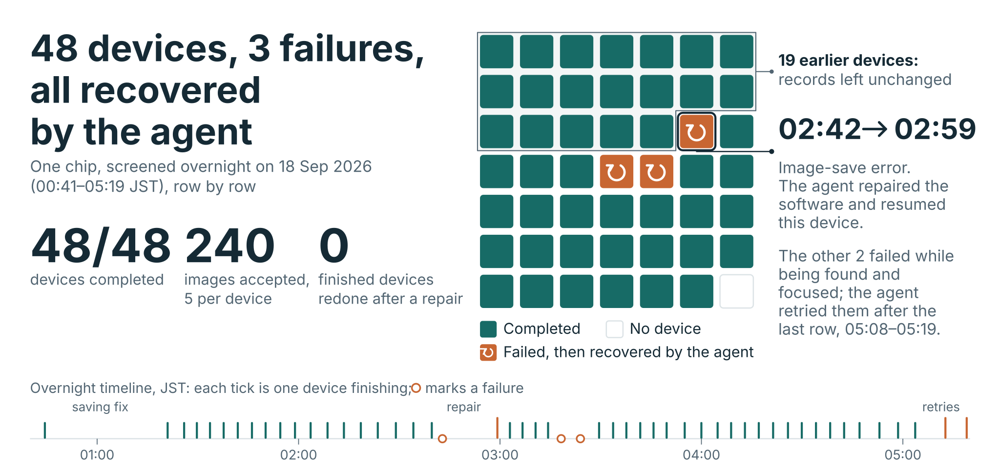
FocusCan it focus by itself?
It finds the focus at every device.
Focus heights vary by 22 µm across one chip, so no single setting fits every device.
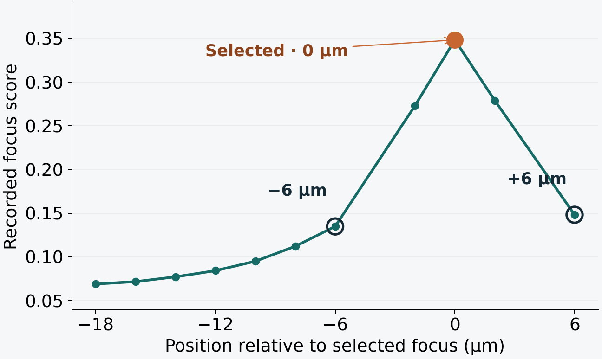
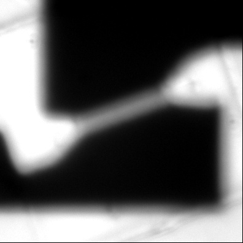
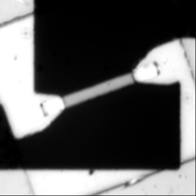
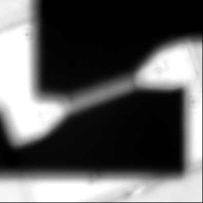
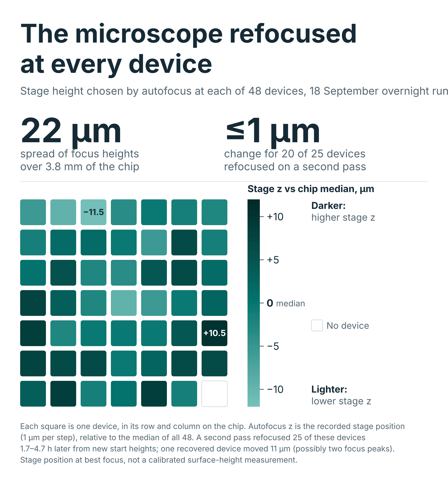
Thin filmWhat does it produce?
Thin-film crystal orientation, mapped automatically.
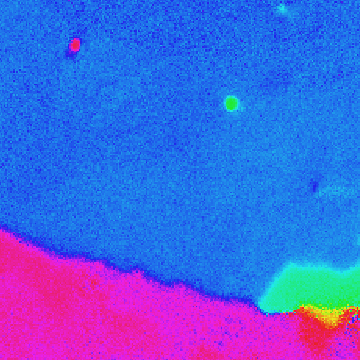
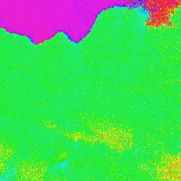
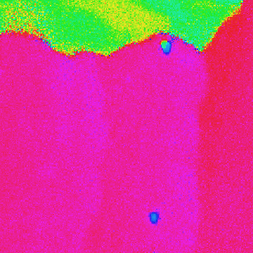
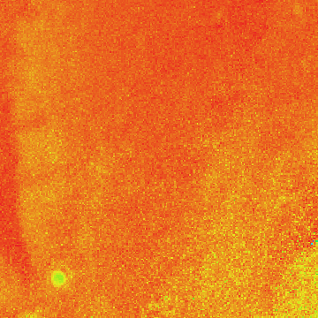
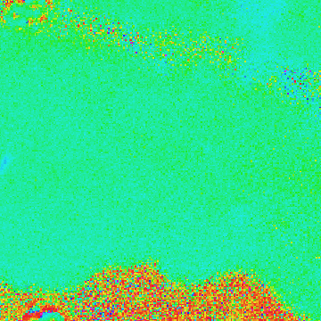
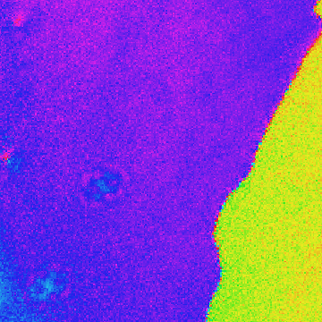
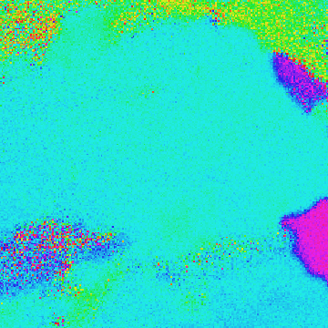
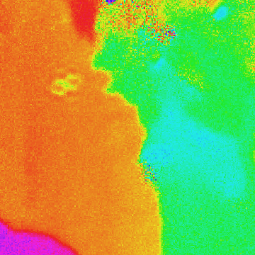
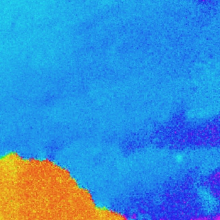
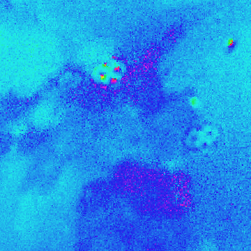
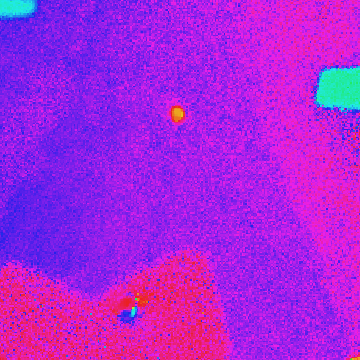
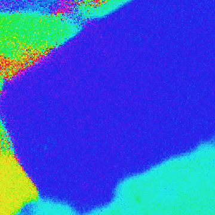
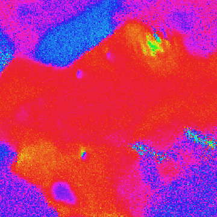
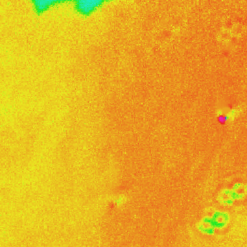
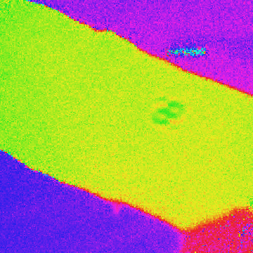
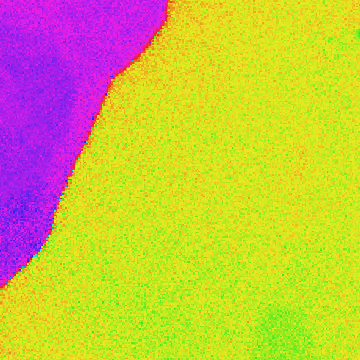
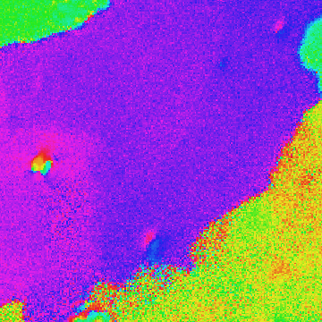
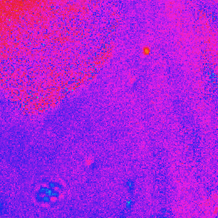
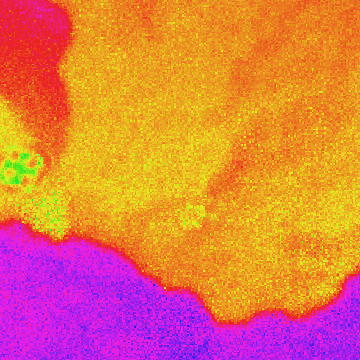
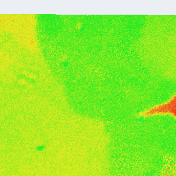
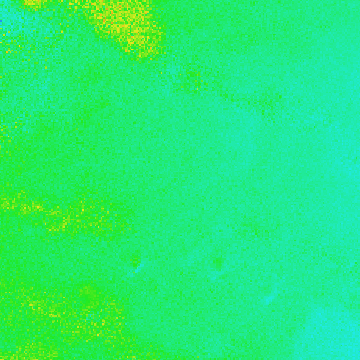
CVWho built it?
An experimental physicist building AI-native instruments.
I came to automation from the bench: crystal growth, low-temperature transport, synchrotron ellipsometry and Raman spectroscopy in a diamond anvil cell.
Education
- 2025–27M.S. in Physics, The University of TokyoResearch master’s: full-time laboratory research with a thesis · Advisor: Prof. Satoru Nakatsuji · GPA 4.0/4.0 · expected 2027
- 2025B.Sc. in Physics, The University of Tokyo
Research experience
- 2025–Master’s research, Nakatsuji–Sakai Laboratory, The University of TokyoAs a master’s student, built the AI-driven measurement platform on this page, now a core part of the group’s research infrastructure. The university also appointed me technical assistant for it in March 2026.
- 2024–25Max Planck Institute for Solid State Research, Stuttgart, GermanyKeimer department · fully funded internship: infrared ellipsometry and Raman spectroscopy on cuprate and nickelate superconductors
- 2024Nakatsuji–Sakai Laboratory · undergraduate researchSingle-crystal growth and low-temperature transport on kagome-honeycomb superconductors
Honors and awards
- 2026Google–UTokyo Quantum FellowshipOne of four across the university; the only master’s student
- 2026IPA MITOU IT ProgramSelected as sole creator
- 2026JST-Mirai site visitLive demonstration of this system; the only student presenter
- 2025First place, IBM × UTokyo quantum-computing hackathonQiskit Fall Fest · team lead
- 2026Excellent Poster Award, MERIT Camp
- 2025–MERIT-WINGS Fellow, The University of Tokyo
NextWhat next?
Change what condensed‑matter experiments can do.
Next, I want to bring agentic experiments to quantum materials, where new behaviour often hides in a narrow window of samples and conditions, and to search that window far more thoroughly than a person can.
I am applying to PhD programs for Fall 2027.
Kaito Tomabechi · M.S. student in Physics · Nakatsuji–Sakai Laboratory · The University of Tokyo